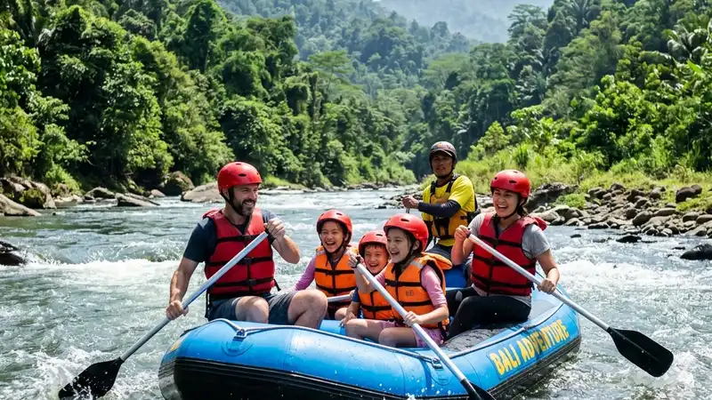

Rafting keluarga adalah aktivitas arung jeram yang dirancang khusus agar orang tua dan anak dapat menikmati sungai bersama dengan tingkat kesulitan dan pengawasan yang disesuaikan. Aktivitas ini cocok untuk keluarga yang ingin liburan aktif namun tetap aman.
- Rafting keluarga menggunakan jalur sungai dengan grade rendah hingga menengah agar aman untuk anak dan pemula.
- Setiap peserta wajib mengenakan pelampung, helm, dan didampingi pemandu berpengalaman.
- Biaya paket rafting keluarga umumnya mencakup peralatan, pemandu, asuransi dasar, dan dokumentasi.
- Usia minimal peserta anak berbeda-beda tergantung kebijakan operator dan kondisi sungai.
- Persiapan fisik dan pemilihan operator terpercaya menjadi kunci pengalaman rafting keluarga yang menyenangkan.
Apa Itu Rafting Keluarga?
Rafting keluarga adalah kegiatan mengarungi sungai menggunakan perahu karet yang dirancang agar orang tua dan anak dapat berpartisipasi bersama dalam satu perahu atau dalam kelompok yang sama, dengan jalur sungai yang dipilih khusus karena arusnya relatif tenang hingga sedang.
Berbeda dengan rafting untuk peserta dewasa atau profesional yang biasanya menantang jalur dengan jeram grade tinggi, rafting keluarga umumnya menggunakan segmen sungai dengan jeram grade satu hingga tiga. Jalur ini dipilih agar tetap memberikan sensasi arung jeram tanpa risiko berlebihan bagi anak-anak dan peserta yang belum berpengalaman.
Operator wisata biasanya menyediakan paket khusus rafting keluarga yang mencakup penyesuaian jumlah peserta per perahu, pendampingan pemandu ekstra, serta briefing keselamatan yang lebih detail dibandingkan paket reguler.
Siapa yang Cocok Mengikuti Rafting Keluarga?
Rafting keluarga cocok untuk orang tua dan anak yang ingin mencoba aktivitas air tanpa harus memiliki pengalaman arung jeram sebelumnya. Aktivitas ini terbuka bagi pemula selama memenuhi syarat usia dan kondisi fisik yang ditetapkan operator.
Selain keluarga inti, aktivitas ini juga banyak diikuti oleh kelompok keluarga besar, rombongan sekolah dengan pendampingan orang tua, serta komunitas yang ingin merayakan momen bersama di alam terbuka. Operator umumnya menetapkan batas usia minimal, biasanya di kisaran usia sekolah dasar, meskipun kebijakan ini dapat berbeda antar lokasi tergantung karakter sungai dan tingkat kesulitan jalur.
Apa Saja Manfaat Rafting Keluarga?
Rafting keluarga memberikan manfaat berupa kebersamaan, stimulasi keberanian anak, aktivitas fisik luar ruang, serta pengalaman menghadapi tantangan bersama dalam lingkungan yang terkontrol dan diawasi pemandu profesional.
Manfaat utama rafting keluarga meliputi beberapa aspek berikut.
- Mempererat kebersamaan. Orang tua dan anak bekerja sama mendayung dan mengikuti instruksi pemandu, sehingga tercipta momen kolaborasi yang jarang didapat dalam aktivitas sehari-hari.
- Melatih keberanian dan kepercayaan diri anak. Menghadapi arus sungai dalam pengawasan yang aman membantu anak belajar mengelola rasa takut secara bertahap.
- Aktivitas fisik yang menyenangkan. Mendayung dan menjaga keseimbangan tubuh selama rafting melibatkan gerakan fisik yang menyehatkan tanpa terasa seperti olahraga formal.
- Pengenalan terhadap alam. Anak-anak diajak mengenal ekosistem sungai, vegetasi tepian, dan pentingnya menjaga kebersihan lingkungan alam.
- Alternatif liburan bebas gawai. Selama sesi rafting berlangsung, seluruh anggota keluarga fokus pada aktivitas fisik dan interaksi langsung tanpa gangguan perangkat elektronik.
Bagaimana Cara Kerja Rafting Keluarga?
Rafting keluarga berjalan melalui tahapan briefing keselamatan, pemasangan perlengkapan, pengarahan teknik mendayung dasar, kemudian pengarungan sungai didampingi pemandu yang mengatur ritme dan rute sesuai kondisi jalur.
Sebelum turun ke sungai, seluruh peserta akan mengikuti sesi pengarahan yang mencakup teknik duduk yang benar di perahu, cara memegang dayung, posisi tubuh saat menghadapi jeram, serta instruksi darurat jika terjadi situasi tak terduga seperti terjatuh dari perahu.
Setelah briefing, peserta akan mengenakan perlengkapan keselamatan berupa pelampung dan helm yang disesuaikan ukurannya, termasuk ukuran khusus untuk anak-anak. Pemandu kemudian memimpin perahu dari posisi belakang sambil terus memberikan instruksi verbal selama pengarungan berlangsung.
Berapa Lama Durasi Rafting Keluarga Biasanya Berlangsung?
Durasi rafting keluarga umumnya berkisar antara satu hingga dua jam pengarungan aktif, ditambah waktu persiapan, briefing, dan sesi dokumentasi setelah kegiatan selesai.
Total waktu yang perlu dialokasikan keluarga untuk keseluruhan rangkaian rafting biasanya lebih panjang dari waktu pengarungan itu sendiri, mengingat ada proses registrasi, pemasangan perlengkapan, perjalanan menuju titik start, hingga sesi bersih-bersih dan istirahat setelah kegiatan.
Apa Saja Faktor yang Memengaruhi Keamanan Rafting Keluarga?
Keamanan rafting keluarga dipengaruhi oleh grade jeram sungai, kualitas peralatan keselamatan, pengalaman pemandu, kondisi cuaca, serta kepatuhan peserta terhadap instruksi yang diberikan sebelum dan selama pengarungan.
Beberapa faktor penting yang perlu diperhatikan meliputi berikut ini.
- Grade jeram sungai. Sungai dengan grade satu hingga tiga umumnya dianggap sesuai untuk rafting keluarga karena arusnya lebih terkendali.
- Kualitas dan kelengkapan alat keselamatan. Pelampung, helm, dan perahu karet harus dalam kondisi layak pakai dan sesuai standar operator.
- Kompetensi pemandu. Pemandu bersertifikasi dengan pengalaman menangani peserta anak-anak menjadi faktor penentu utama keamanan.
- Kondisi cuaca dan debit air. Operator yang bertanggung jawab akan menunda atau membatalkan jadwal rafting jika debit air sungai dinilai tidak aman.
- Kepatuhan peserta. Anak dan orang tua perlu mengikuti instruksi pemandu secara disiplin, termasuk posisi duduk dan cara merespons saat perahu melewati jeram.
Menurut catatan umum industri wisata arung jeram di Indonesia, operator yang menerapkan standar keselamatan ketat cenderung mengalami tingkat insiden yang jauh lebih rendah dibandingkan operator tanpa sertifikasi resmi, terutama pada periode musim hujan ketika debit air sungai lebih fluktuatif.
Apa Saja Kesalahan Umum saat Membawa Anak Rafting?
Kesalahan umum saat rafting keluarga meliputi memilih jalur dengan grade terlalu tinggi, mengabaikan batas usia minimal, tidak memastikan ukuran pelampung anak sesuai, serta kurang mempersiapkan kondisi fisik dan mental anak sebelum kegiatan dimulai.
- Memilih jalur yang tidak sesuai usia anak. Beberapa keluarga tergoda memilih paket rafting menantang tanpa mempertimbangkan kesiapan anak.
- Mengabaikan rekomendasi usia minimal operator. Setiap operator memiliki kebijakan usia berbeda berdasarkan karakter sungai masing-masing.
- Pelampung atau helm tidak pas ukuran. Perlengkapan yang terlalu besar dapat mengurangi efektivitas perlindungan saat kondisi darurat.
- Anak belum sarapan atau kondisi fisik lemah. Aktivitas fisik seperti rafting membutuhkan stamina yang cukup agar anak tidak mudah kelelahan di tengah pengarungan.
- Tidak mendengarkan briefing dengan saksama. Sebagian peserta menganggap briefing hanya formalitas, padahal instruksi tersebut penting untuk respons saat kondisi darurat.
Bagaimana Tips Memilih Paket Rafting Keluarga yang Tepat?
Tips memilih paket rafting keluarga yang tepat meliputi memastikan legalitas operator, memeriksa standar keselamatan, menyesuaikan grade jeram dengan usia anak, serta membaca ulasan peserta sebelumnya sebagai bahan pertimbangan.
- Periksa legalitas dan reputasi operator. Operator resmi biasanya tergabung dalam asosiasi wisata arung jeram dan memiliki izin usaha yang jelas.
- Tanyakan rasio pemandu terhadap peserta. Semakin kecil rasio jumlah peserta per pemandu, semakin baik tingkat pengawasan yang bisa diberikan.
- Sesuaikan grade sungai dengan kondisi anak. Pilih jalur grade rendah untuk anak yang baru pertama kali mencoba rafting.
- Cek kelengkapan fasilitas pendukung. Fasilitas seperti ruang ganti, toilet, dan area istirahat turut menentukan kenyamanan keluarga.
- Baca ulasan dan testimoni. Pengalaman keluarga lain dapat memberikan gambaran nyata tentang kualitas layanan operator.
Bagi keluarga yang ingin memperkenalkan aktivitas ini secara khusus kepada anak, artikel rafting anak membahas lebih detail tentang persiapan dan pertimbangan usia. Sementara pilihan destinasi dapat dilihat pada artikel wisata rafting anak yang merangkum lokasi-lokasi ramah keluarga.
Berapa Kisaran Biaya Rafting Keluarga?
Biaya rafting keluarga umumnya mencakup sewa perahu, perlengkapan keselamatan, jasa pemandu, dan dokumentasi, dengan besaran yang bervariasi tergantung lokasi, jarak jalur, dan fasilitas tambahan yang dipilih.
Secara umum, harga paket rafting keluarga dapat bervariasi cukup signifikan antar destinasi karena perbedaan jarak lintasan sungai, tingkat kesulitan jalur, serta fasilitas tambahan seperti transportasi antar-jemput, makan siang, atau sertifikat kegiatan. Keluarga disarankan untuk membandingkan beberapa penawaran paket sekaligus menanyakan secara rinci apa saja yang termasuk dalam harga sebelum melakukan pemesanan. Rincian lebih lanjut mengenai kisaran biaya dapat dilihat pada artikel wisata rafting anak.
Berdasarkan tren umum sektor pariwisata petualangan air di Indonesia pada periode 2023-2025, permintaan paket wisata keluarga yang menyertakan aktivitas air seperti rafting menunjukkan peningkatan yang konsisten, sejalan dengan semakin banyaknya operator yang menyediakan paket khusus ramah anak.
FAQ
Apakah rafting keluarga aman untuk anak kecil?
Rafting keluarga umumnya aman untuk anak selama mengikuti jalur dengan grade rendah, menggunakan perlengkapan keselamatan yang sesuai, dan didampingi pemandu berpengalaman sesuai kebijakan usia minimal operator.
Berapa usia minimal anak untuk mengikuti rafting keluarga?
Usia minimal bervariasi antar operator, namun umumnya berada di kisaran usia sekolah dasar, tergantung pada karakter dan tingkat kesulitan jalur sungai yang digunakan.
Apa yang perlu dibawa saat rafting keluarga bersama anak?
Peserta disarankan membawa pakaian ganti, alas kaki yang aman untuk basah, tabir surya, serta obat pribadi jika diperlukan, sementara perlengkapan keselamatan utama biasanya disediakan operator.
Arya
Penulis artikel yang sudah berpengalaman di dalam dunia wisata outbound Batu Malang.